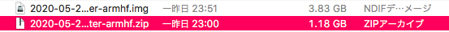
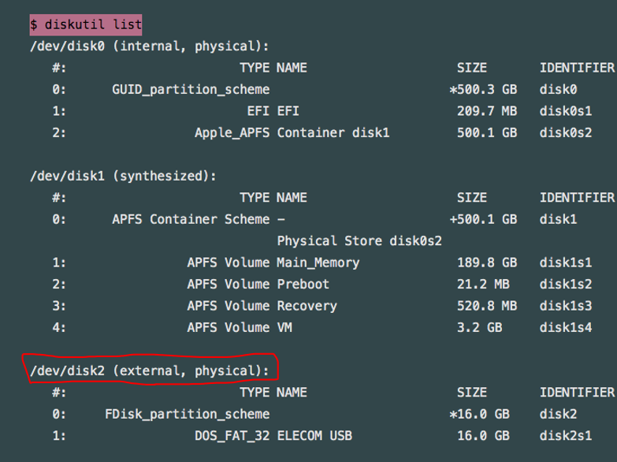

raspberry pi の初期設定①
①OS”raspbian”をパソコンにインストール
https://qiita.com/shippokun/items/9070fc58f69d8c063e44を参照に、
raspbianを自分のパソコンにインストールしました。（インストール完了に大体１時間くらい）
無事インストールできると、
下記のように.zip形式でインストールされるので
解凍して、.imgの形式にする。

②SDカードにコピーする
rapbianがインストールできたら、
SDカードをパソコンに差し込み
まずはじめに、SDカードのフォーマットの変更と
マウントを解除する。
(写真を撮るのを忘れたのだが、
macの場合はspotlightでDiskUtilityを検索して
自分のSDカードを選択し、いったん消去してからマウントを解除する。)
こんな感じに↓

>
次に、ターミナルを開き、
$ diskutil listを打ち込み
自分のSDカードのディスクを確認する。

確認ができたら、
$ diskutil unMountDisk /dev/disk2を打ち込む。
※ここで確認を怠り、間違ったものを入力すると
パソコン内のデータが全部ぶっ飛ぶので注意。
Unmount of all volumes on disk2 was successfulと表示されたら
無事フォーマットが成功している！
そしたら
再度$ diskutil unMountDisk /dev/disk2を入力し、
$ sudo dd bs=1m if=2016-11-25-raspbian-jessie.img of=/dev/disk2を入力する。
これで、SDカードにコピーすることが可能なのだが、
このddコマンドは進捗状況が確認できないので
定期的にCtrl+Tを押して確認する。（１０分くらいで完了する）
以上今回は、raspberry piの初期設定①でした。